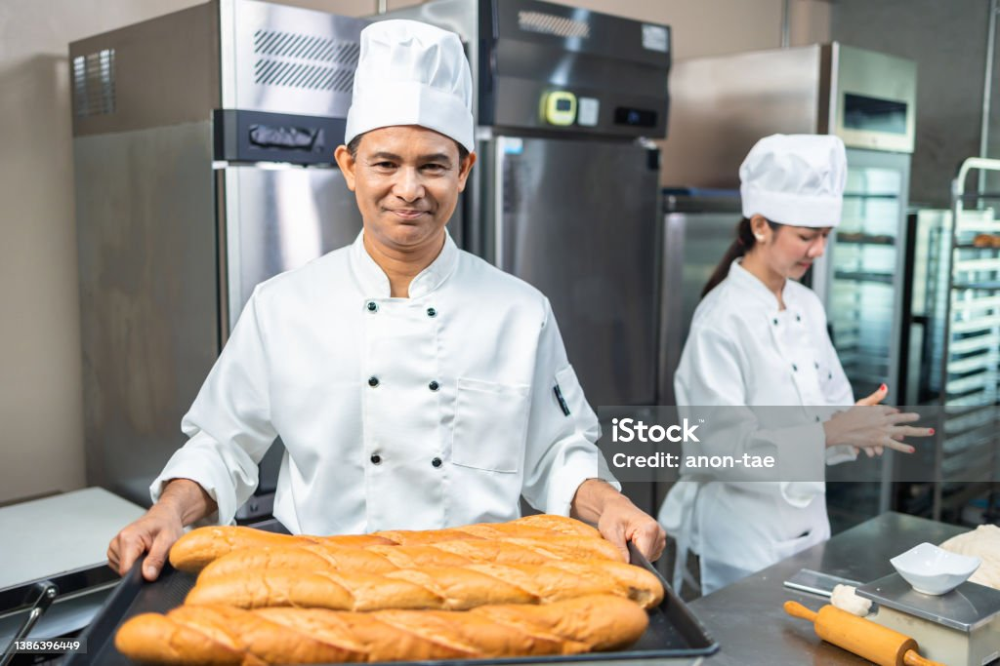
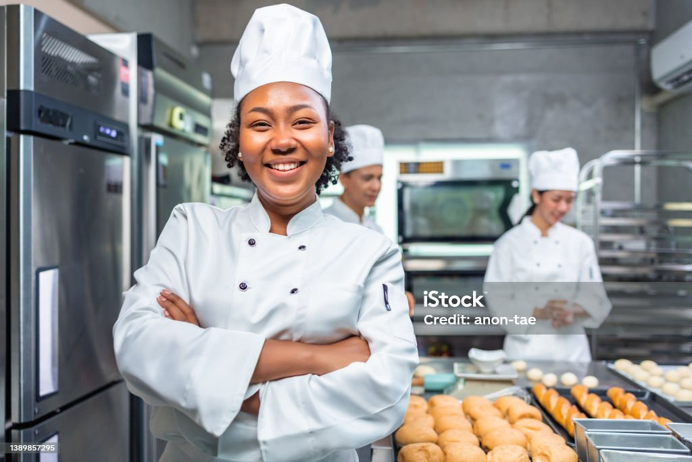

About Us
.We were able to work well as a team and we serve as intermediaries as well as using our own initiatives and worked well under pressure and adhere to strict deadlines
Our aim in creating the website is for people to buy food in a convenient and seamless online platform in order to enjoy delicious meals from the comfort zone of their own homes.

OUR TEAM
General Manager, Hussy
- Experience: 5+ years in hospitality management
- Expertise: Customer service, team leadership
- Personality: Warm, welcoming, and attentive to detail
- Expertise: Customer service, team leadership
- Personality: Warm, welcoming, and attentive to detail

Ammi
Experience: 10+ years in culinary industry
Expertise: Innovative cuisine, menu development
- Personality: Passionate, creative, and dedicated to quality
Expertise: Innovative cuisine, menu development
- Personality: Passionate, creative, and dedicated to quality

Chef John
Experience: 8+ years in culinary industry
- Expertise: Kitchen operations, menu execution
- Personality: Calm, precise, and creative under pressure
"Michael's attention to detail and calm demeanor make him a valuable asset to our kitchen team. He's always experimenting with new flavors and techniques to elevate our dishes."
- Expertise: Kitchen operations, menu execution
- Personality: Calm, precise, and creative under pressure
"Michael's attention to detail and calm demeanor make him a valuable asset to our kitchen team. He's always experimenting with new flavors and techniques to elevate our dishes."

Sharifat's vision and passion for great food have shaped our restaurant into the beloved institution it is today. She's dedicated to sourcing the best ingredients and supporting local suppliers."
Sharifat